Give your agent a company name. eden-motion researches the brand, writes and voices the script, storyboards it from 31 scenes, renders real 3D in Blender, puts every cut and every sound on the beat, renders with true shutter motion blur, then measures every frame and fixes what it finds. You get a strong draft to direct, not a template.
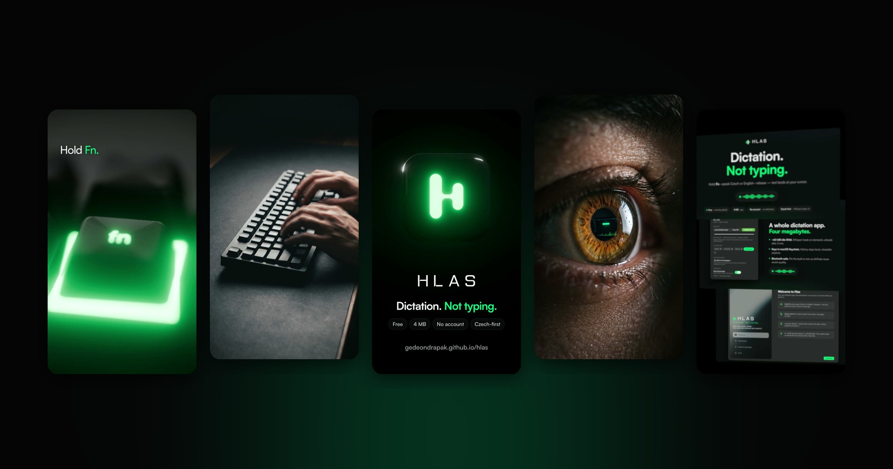
Two films rendered end to end by the pipeline. Turn the sound on: the stems are voice, music, foley and stingers composed in the music's key.
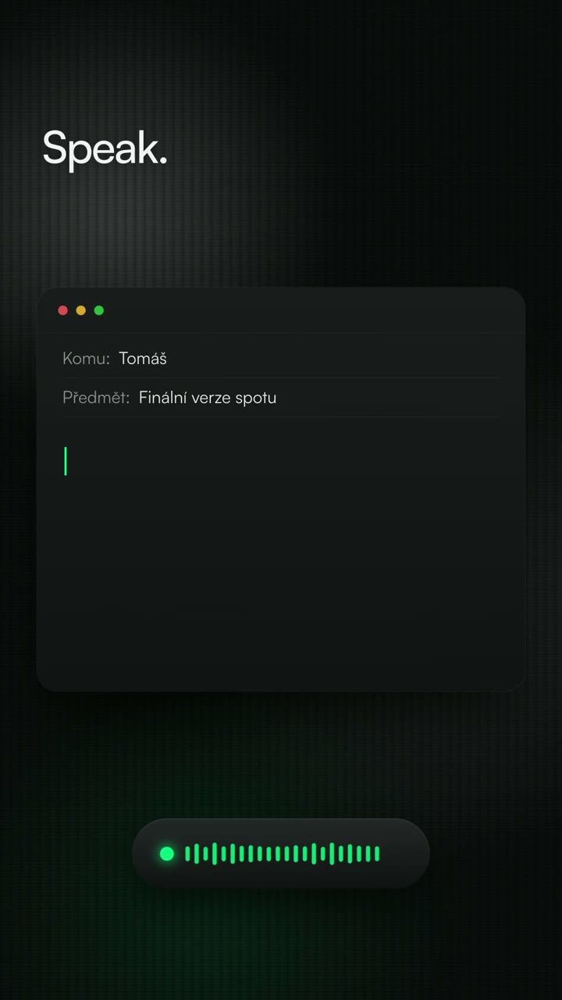
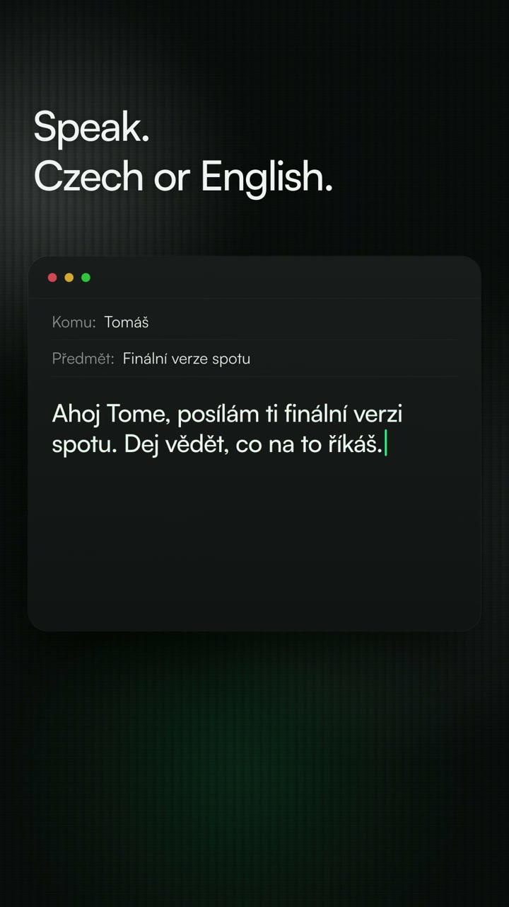
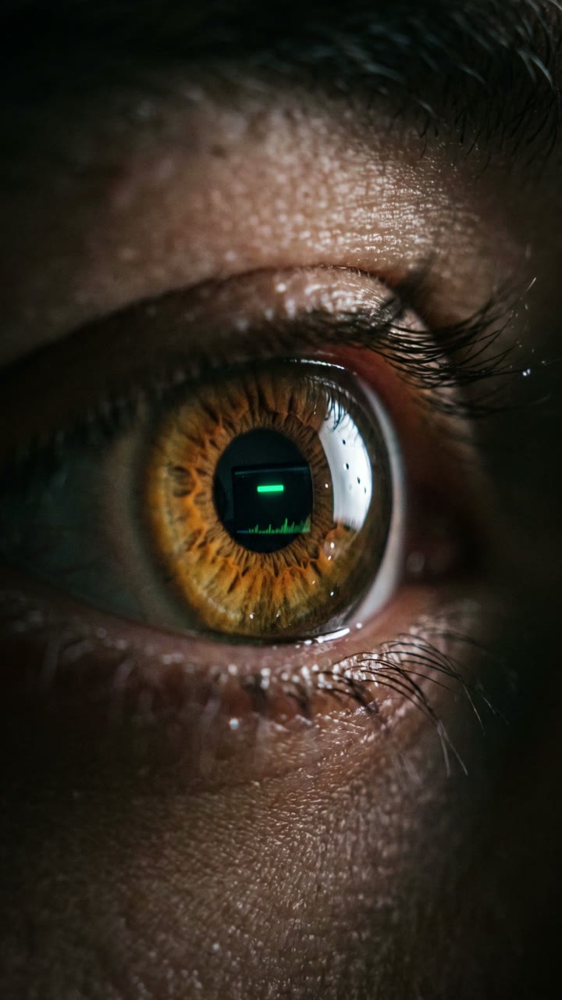
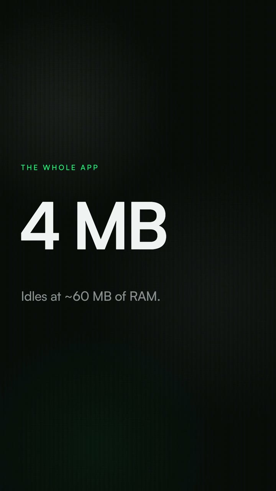
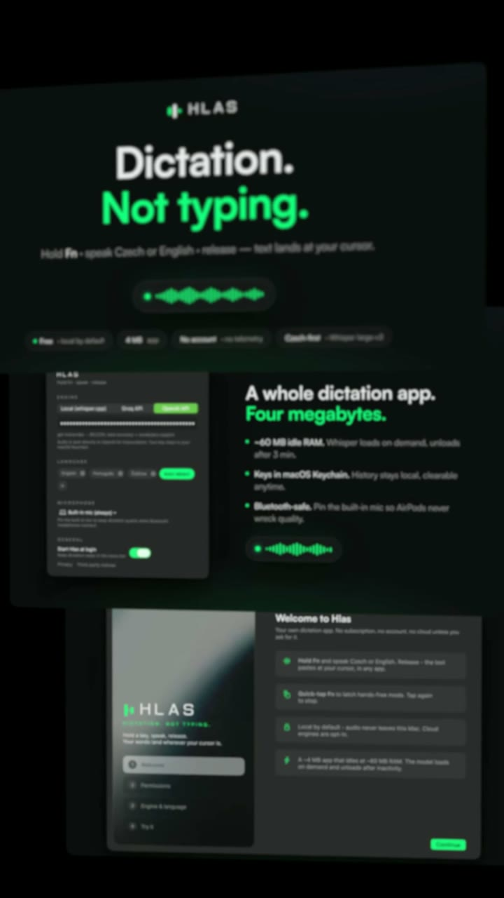
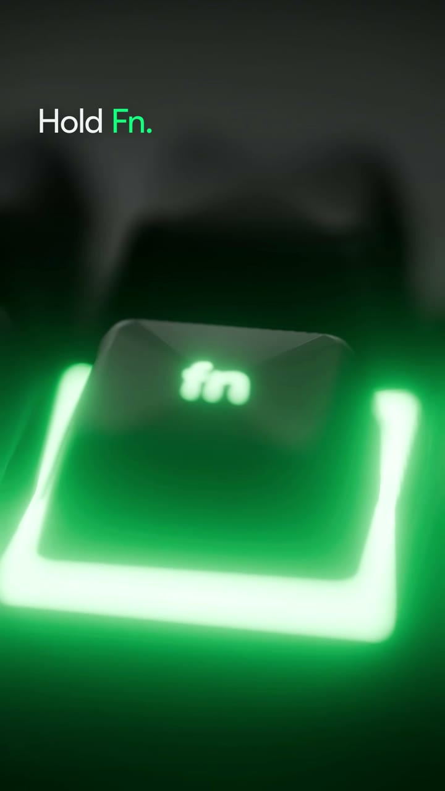
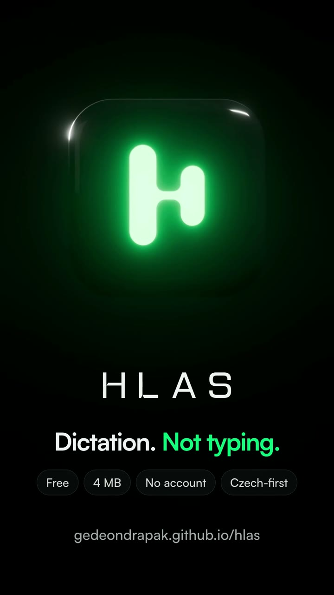
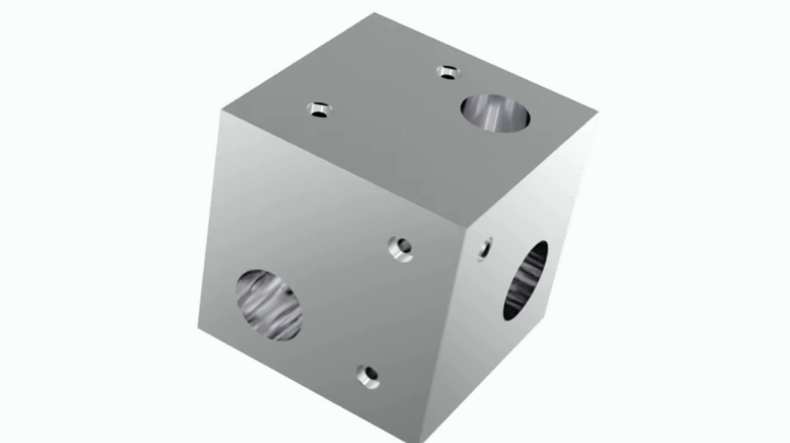
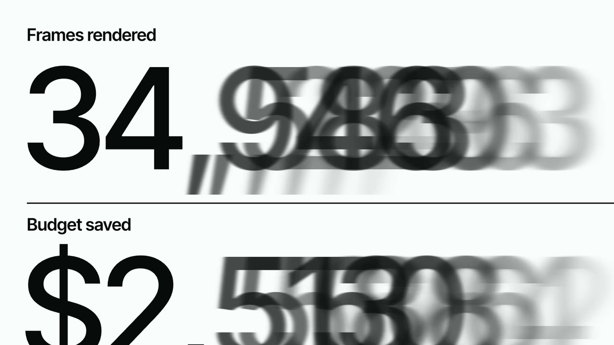
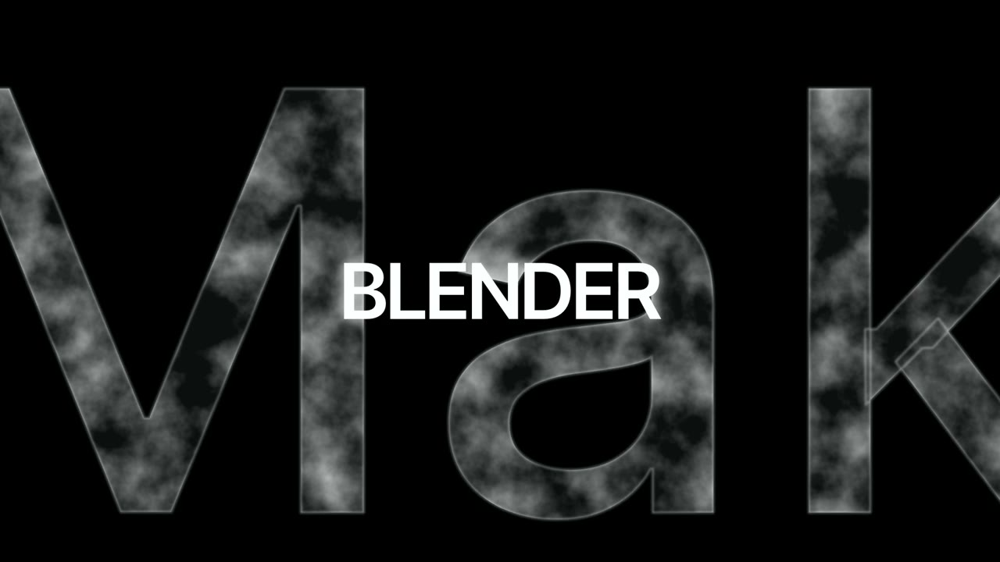
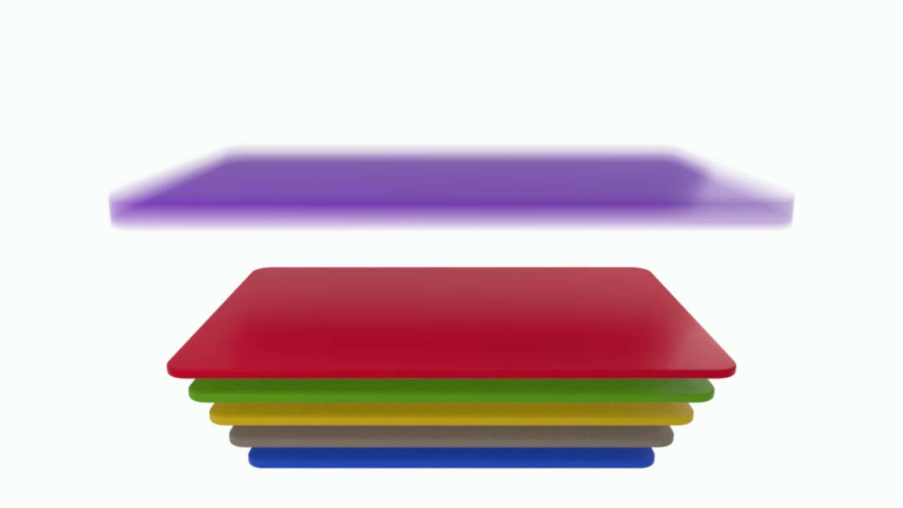
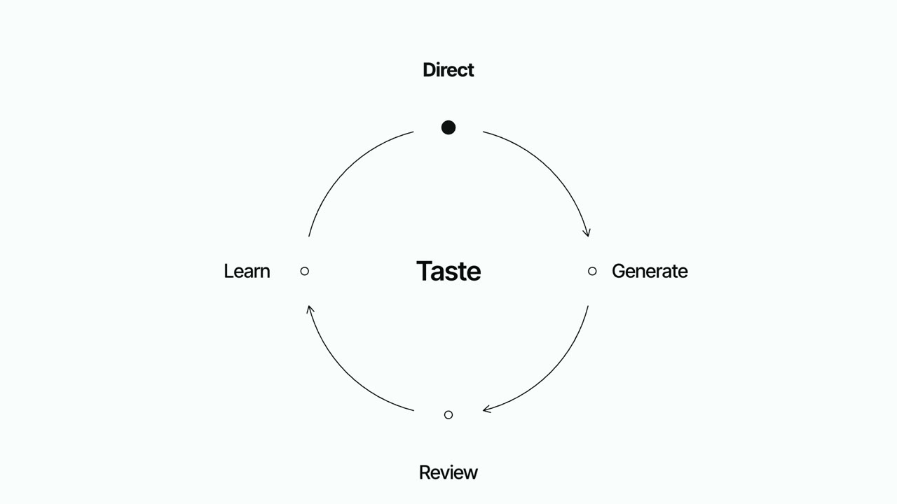
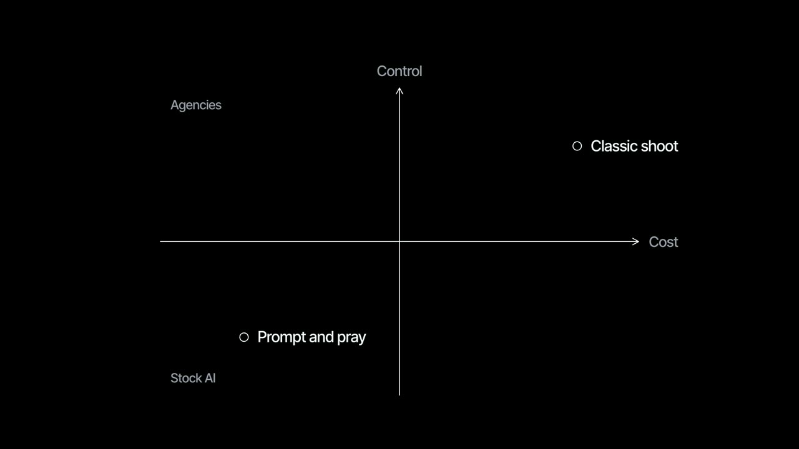
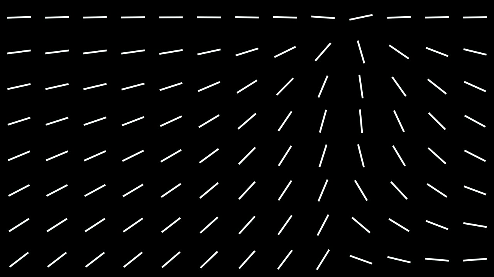
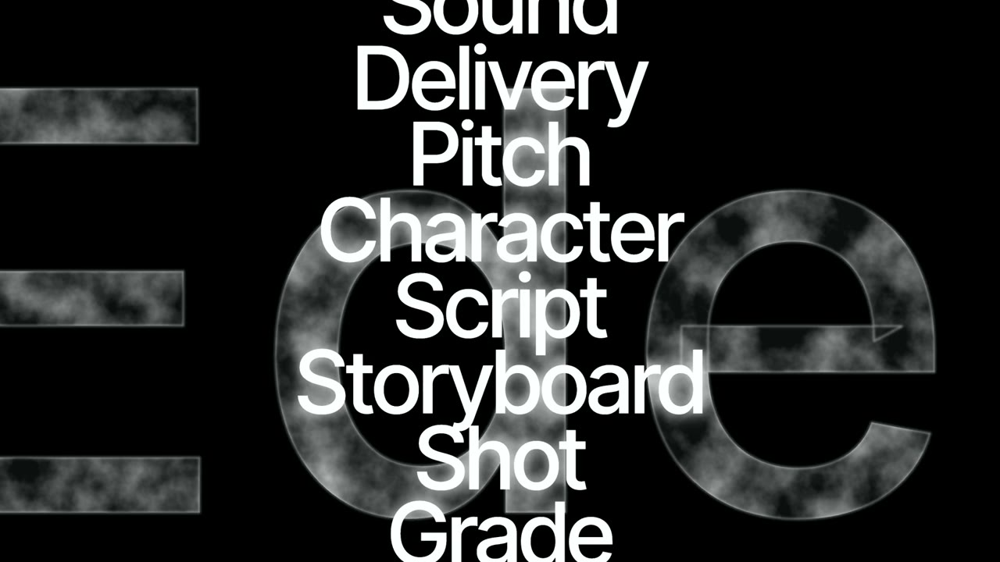
Every step is plain JSON in a project folder, so an agent or a human can stop anywhere, edit, and continue.
Kinetic and editorial type, product UI with camera and cursor, counters, diagrams, glass orbs, logo lockups. Styles: SaaS explainer, launch film, grid promo, editorial metronome.
blender: props render headless plates. layers-3d puts your screenshots and stills into real space for true depth of field, rack focus and parallax.
Time is stretched where things move fast, sub-frames are captured and averaged with a real 180 degree shutter. Smear only where it belongs.
Voice, music, ambience and four SFX layers as separate stems, from 5M+ free sounds on Openverse scored in code. remix rebalances in a second.
Contact sheets, a phone-size test, frame strips around every cut, measured pops and dead air, a harsh rubric. It never ships the first render.
ref measures a film, compare puts yours next to it with SSIM, critique --against scores both with the same rubric.
measure steps through every frame: reading time per line, text cut by the frame, ease tails that freeze, glyph judder. It found type snapping 1 px under the camera push and the fix took it from 0.92 px to 0.02 px.
sync moves every cut within 120 ms of a music beat onto it, on the frame grid. One-shot sounds land a frame early and pan with the element that makes them.
/plugin marketplace add Eden-Makers/eden-motion /plugin install eden-motion@eden-motion > set up eden-motion # checks tools, installs what is missing, you paste # API keys into a masked prompt (never the chat), # then a 7 s smoke render > make a 40 second launch film for Linear, 4:5
# macOS, Node 20+, ffmpeg, Chrome. Codex, Gemini CLI, # Cursor and opencode get the skill too git clone https://github.com/Eden-Makers/eden-motion cd eden-motion && ./install.sh eden-motion setup eden-motion new "Attio" --url https://attio.com \ --duration 40 --format 4:5 --style relate
eden-motion is how our studio drafts. Launch films, product demos and AI films for brands are directed and finished by the Edenmakers team in Prague.